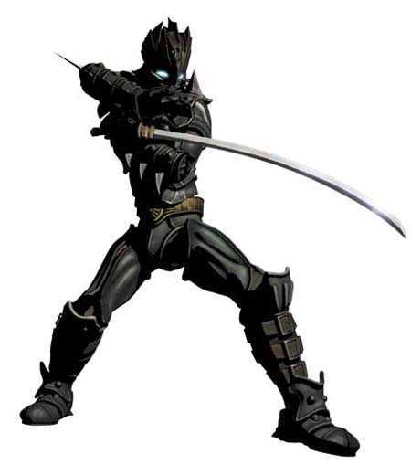
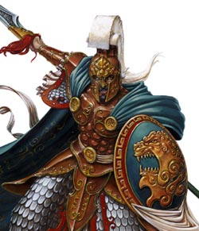
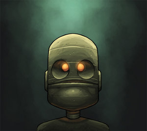

Forums galactiques > Assemblée Galactique : diplomatie officielle > Archives des présentations
Pages : 1 2 ... 53 54 55 ... 63 64
| Thanos Respect diplomatique : 227  14/06 ETU 15:59  | Score : 1 Détails Bienvenue dans Espérence
| ||
| black angel Respect diplomatique : 87  17/06 ETU 13:51 | Score : 6 Détails le dark angel est un surhomme qui a raté sa vie.Cet ange qui était si bon doit à présent lutter contre la haine et la violence.Rejeté de tout le monde,cet ange peut parfois devenir cruel:
J'ai été renié des hommes dès ma jeunesse car j'appartenais à une famille détestée,une famille de sorcière.Je n'ai pas connu mon pere car ma mère l'avait tué peu avant que je naisse.Quand un jour un villageois de maotikai,ma planète où je suis né,vint me voir,j'avais 10 ans et il me raconta qu'un soir ma mère avait mangé mon pere pour son pouvoir surnaturel.Le soir même,j'allai chez moi et tuai ma mère en la tuant d'un coup de couteau en plein coeur;étant une sorcière,je la brullai et la mangeai.Voila mon histoire.Apres,je partis dans dans la galaxie esperance rejoindre mes amis que je mettais fait sûr maotifai,mes cinq confreres: van,shaka,metalaurel,le vaillant kevnz et le courageux no-gravity. Age:500ans religion avec la coalition euphorienne avec qui j'entretiens de bon projet. Ennemi:J'aime tout le monde sauf ceux qui se mette sur ma route. Objectif:revoir mon père et pouvoir le serrer dans mes bras. Mes fréres:metalaurel et kevnz. Et mes 3 cousins:van,shaka et no-gravity. | ||
| Hannibal Respect diplomatique : 7  18/06 ETU 18:17 | Score : 7 Détails Dans les vieux couloirs de la salle des presentations une nouvelle tete fit son apparition
Bonjour à tous ! Je me nomme Hannibal Je suis le descendant de nombreux guerriers qui ce sont battuts tout au long de leurs vies contre les tyran et autres belligerants ! Je viens aujourd'hui en ces terres d'esperance pour tenter d'aider du mieux que je le pourrais pour l'aider... Pour que la paix eternelle subsiste et que les armes soient totalement abolies ! | ||
| anonymations Respect diplomatique : 159  18/06 ETU 18:22 | Score : 1 Détails Bienvenu commandant Hannibal, vous trouver l'assemblée vieillot ?
| ||
| Etherin Respect diplomatique : 50  18/06 ETU 18:44 | Score : 12 Détails Un homme blond, les cheveux coiffés en arrière portant des vêtements imposants mais qui lui siéent à la perfection arrivait à l'assemblée, le regard fier et haut, pas une seule fois il ne baissa la tête.
Il alla au milieu de l'assemblée sans hésitation aucune Le roi Etherin est fier de se présenter à vous peuple galactique. renfermé, les seuls étrangers autorisés à visiter ses chères contrées sont ceux disposant d'un badge délivré par le roi lui-même. Son peuple uni sous le royaume d'Artic vient tout juste de sortir de son cataclysme planétaire qui l'a obligé à vivre sous terre, ainsi, en s'adaptant, il a développé une architecture nouvelle, comme heureuse conséquence, les batiments sous-terrains sont plus faciles à protéger, ceci n'est qu'une parmis les nombreuses particularités de son peuple. Ainsi Etherin vous présente toutes ses salutations les plus amicales. C'est ainsi que le roi s'en alla, sans manquer de réserver une place à l'assemblée qui sera sienne à sa prochaine visite. hrp/ Oui Etherin parle de lui et de son peuple à la troisième personne./hrp | ||
| Mathilda Hanna Respect diplomatique : 1228  18/06 ETU 21:11 | Score : 5 Détails Avant que l’homme blond qui se nommait Etherin n’ait pu franchir la porte de la salle,
une jeune adolescente se leva, et sa voix rompit le silence qui s’était installé… « Roi Etherin, au nom du peuple népo-flÿnnaen, je vous souhaite la bienvenue, à vous et au Royaume d’Artic, dans cette noble assemblée… » Puis, s’adressant à un autre commandant : « Commandant Hannibal, je vous souhaite également la bienvenue, ainsi qu’à votre peuple… » La jeune adolescente allait se rasseoir, lorsqu’elle repris brusquement : « Ah oui, j’allais oublier !… Il est bien évident que vous pouvez compter sur nous si vous aviez la moindre question ! » Sur ce, elle se rassit enfin… | ||
| Bjorn Respect diplomatique : 239  18/06 ETU 23:10 | Score : 9 Détails Un grand homme brun se leva. Le cliqueti de son armure l'accompagna durant la traversée du hall.
"Salutations, grands seigneurs et maîtres de la galaxie. Je me présente, je m'appele Bjorn. Je m'excuse pour mon retard. les festivités suite à l'union de tous les clans de Calypso m'ont laissé peu de temps. En effet, voici trois jours que le dernier chef s'est soumis. Depuis que la paix règne, ce n'est plus le sang, mais l'alcool qui à coulait à flots. Maintenant que le calme est revenu, je souhaite m'investir dans le forum. Cependant, mon empire étant à ses débuts, mon rôle est plus celui d'observateur que celui d'acteur. Je vous pris donc d'excuser mon silence pour l'instant." | ||
| Général Victa Respect diplomatique : 364  19/06 ETU 07:15 | Score : 4 Détails Hunta entra pleins de nouveaux visages étaient présent dans la piéce.
Bienvenue en esperance que la paix et la liberté vous accompagne. /hrp évite de dire la prochaine fois forum c'est hrp,dit plutôt salle ,batiment ou piéce ,voila. | ||
| Arcos Respect diplomatique : 61  19/06 ETU 19:54 | Score : 4 Détails Un hologramme apparut venant du fin fond de l’Univers. On vit un jeune homme qui s’annonça donc aux commandeurs assemblés.
Honorables commandeurs de la Galaxie, Pour me présenter je suis Arcos, Chancelier de la Nouvelle République Tarnoise avec comme capitale Aquanox. Du aux désastreuses lignes de communications nous n’avons pas pu prendre contact plus tôt avec vous mais nous voudrions donc récupérer ceci. Je souhait que notre République et l’assemblé des autres commandeurs puissent cohabiter en paix et sérénité en évitant des conflits inutiles et sanguinaires. Je voudrais au nom de mon peuple féliciter pour le Traité de Paix qui fut conclut avec Corti Cronos il y a peu et qui permet de le rétablissement de l’ordre et la paix. | ||
| Général Victa Respect diplomatique : 364 19/06 ETU 20:00 | Score : 0 Détails Un hollogramme d'Hunta apparu ,étant blésser ,il n'avait pu se déplacer.
La paix et la libertée est mon but. Bienvenue en Esperance ,commandant. Un lieu d'Espoir et d'Avenir. Longue vie à vous et à votre peuple. | ||
| Dizin Cronos Respect diplomatique : 23  19/06 ETU 20:09 | Score : 10 Détails Un vent glacial traversa l'assemblée, un homme vêtu de noir et aux cheveux blanc apparut, il avança sous les regards des autres pour se présenter
Je m'appelle Dizin... Dizin Cronos, je viens de trouver refuge sur une planète au climat tempéré, ou il fait tares chaud pour moi, mais c'est pas une raison pour dire que je ne l'aime pas, ses habitants mon réfugiés, quand l'un des vaisseaux de ma famille explosa, je ne veux pas vous dérangez plus longtemps Il disparut comme il est venue | ||
| black bird Respect diplomatique : 772  19/06 ETU 20:16 | Score : 8 Détails //black bird s'interposa entre le "nouveau Cronos" et lui souffla quelques mots discrétement..."//
- Mon garçon attention, la moindre boulette et je te tomberai dessus... J'espére que vous n'êtes pas comme votre famille...Sinon, votre vie sera trés courte, et douloureuse... Sur ceux, comme vous l'avez compris, j'attends un peu avant de vous souhaiter la bienvenue... // black bird s'écarta et laissa passer le nouveau Cronos...// | ||
| Leonidas Respect diplomatique : 13  20/06 ETU 18:11 | Score : 13 Détails Léonidas entra dans la salle et pronança son disours d'arriver dans cette galaxie.
Bonjour a toutes et a tous.Je souhaite vous faire part de mon arriver dans cette humble galaxie. Je me nomme Léonidas,je vient de la planète Spartakus.Je suis le fils de l'empereur Spartiate,Iléonas.Je suis fier d'etre parmis vous.J'espère avoir une bonne acceuille de votre part.Je suis commerçant depuis l'age de 26 ans.Sur ma planète j'ai était élu meilleur commenrçant de la planète.J'ai eu les honneur et la fiertè de mon père.Je souhaite faire de même dans cette galaxie toute entière. Je souhaiterais aussi avoir l'aide de quelques commerçants ayant eu une expérience de la vie de commerçant dans cette galaxie.Ma planète et en ce moment en quelque sorte,en besoin de marchandises pour pouvoir survivre.Mon père ma donc envoyé pour accomplir la tache d'aider son peuple a survivre en essayant d'avoir plus de ressource possible pour les habitant de ma planète.Ma planète a pour le moment aucune ressources militaires et économiques(leems,diamants,etc...)pour survivre au attaque de certain ennemie sur les quels mon père ma renseigner. Voila,j'ai dit tout ce dont j'avait a dire.J'espère avoir était a la hauteur pour vous,Assemblè Galactique. | ||
| Andy Respect diplomatique : 33  22/06 ETU 11:20 | Score : 10 Détails Activation du préhenseur droit.
Mouvement oscillant requis contre le système "Portes", dans le but de provoquer son ouverture. Pourquoi les Portes s'ouvrent-elles lorsque je les frappe ? Commande effectuée. Ouverture des Portes constatée. Réussite de la procédure 0CE452J4. Les immenses portes à double-battant de l'Assemblée Galactique s'ouvrirent sur le petit être métallique. Du haut de ses 120 centimètres, le petit robot avait l'air d'un empilement approximatif de trois ou quatre boîtes de conserve, et le fait qu'il parvienne malgré tout à marcher ne le rendait pas spécialement plus remarquable. Il s'avança à la tribune, pour prendre la parole. Ses grands yeux ronds grotesques observaient de leur lueur orangée les commandants présents. Malgré son allure comique, le robot inspirait plus la pitié que le rire. Arrivé au micro, il leva la tête pour estimer la distance qu'il lui restait à parcourir verticalement pour pouvoir l'utiliser, puis, après quelques secondes d'inactivité, grandit soudainement de quelques centimètres, juste assez pour atteindre le micro. "Bonjour à tous. Je suis Andy, Robot Diplomate et Fonctions Assimilées. Je siégerai parmi vous autres à partir d'aujourd'hui. J'espère entretenir de bonnes relations avec vous tous. J'espère aussi que tout cela me permettra de répondre à certaines questions que je me pose depuis peu. Tout ça est très étrange. Je ne suis pas contre une aide matérielle, pour m'aider à développer les régions ayant accepté de rejoindre mon empire naissant. Je suis de toute façon joignable par X-Com si besoin est. Merci de votre attention." La taille du robot revint à ce qu'elle était initialement, et le petit être repartit comme il était venu, de sa démarche grotesque, alors que les Portes se refermaient sur lui. Qui suis-je ? D'où viens-je ? Où vais-je ? Pourquoi ? Les grandes questions métaphysiques sont l'apanage des humains. Andy est un robot. Un robot seul, dont le modèle est inédit. Il n'a même pas de numéro de série. Et depuis peu, Andy se pose des questions... | ||
| Général Victa Respect diplomatique : 364 22/06 ETU 11:40 | Score : 2 Détails Hunta entra dans la salle ,content de voir d'autres nations parmi déjà celle exitantes.
Bienvenue dans cette galaxie,que votre vie soit longue pour vous tous. | ||
| Leyrn Morpheus Respect diplomatique : 175  22/06 ETU 12:43 | Score : 6 Détails Leyrn regarda avec dépit les lourdes portes se fermées dans un grincement sourd. Tenant avec fermeté une bouteille d'astro-pastis, il se retourna pour aller se rasseoir.
- Même pas eut le temps de tester l'effet du nectar divin sur une intelligence artificielle...qu'est ce que ça m'aurait fait planer de voir ce machin bourré. | ||
| darkangels Respect diplomatique : 56  23/06 ETU 19:34 | Score : 0 Détails [b][pink] Voilà vous y êtes ![/b][/pink][orange][i] en désignant la salle à divin cronos[/i][/orange][b][pink]C'est ici que vous pourrez vous présenter à tous les commandants d'Espérance ![/pink][/b]
[small] HRP :// Pour ceux qui comprendrais pas ce rendre à la Taverne, j'ai montré le lieux où divin cronos devait se présenter ..... ceci est une transition :p [/small] | ||
| divin cronos Respect diplomatique : -10 23/06 ETU 19:38 | Score : -10 Détails merci ma cher dark angel
bonjour je m appel divin cronos et je vous souhaite un tres bon apres midi ou maintenant une tres belle soiree cordialement divin cronos | ||
| Shark Respect diplomatique : 156  23/06 ETU 21:28 | Score : 1 Détails Nous voilà dans le lieu ou nous avons pour la première fois un boulet qui essaye de parlé,
sinon pour la poubelle c'est en bas. Mais puré qui a mis cette peau de banane qui ma fait ripé sur un moins zut c'est pas gentil ça. | ||
| Lax Respect diplomatique : 21  24/06 ETU 23:10 | Score : 12 Détails Alerte CODE ROUGE - Alerte CODE ROUGE - Alerte CODE ROUGE
Rapport d'insurrection : # annihilation défenses Z3 ,Z2 et Z1. # défenses restantes Z0. BANG! BANG! *crioouuuuksxzwxk* Rapport d'insurrection : # annihilation défenses Z0. # annihilation totale. # contrôle planète perdue. # fin de transmission, autodestruction du système électronique dans 600 secondes. Les portes s'ouvrirent dans un échappement d'air et de fumée. Le sas devait être perforé par les tirs, aussi la fumée envahissait la salle, s'évacuant petit à petit par les conduits d'aération. Une escouade de militaires pénétra dans ce qui avait été le dernier bastion de résistance Seanchan* dans la galaxie Espérance. C'était le Quartier Général militaire de la capitale Seanchane. Les militaires étaient tous vétu du même uniforme, une combinaison militaire grise au camouflage adéquate au combat en intérieur. Leur masque obstruait leur visage, et l'ont entendait leur respiration par le tuyaux d'arrivée d'air. Leurs yeux était dissimulé derrière une visière parfaitement opaque verte. Un seul se démarquait des autres. Il ne portait pas de masque mais une casquette militaire noire, avec une tête de mort au dessus de la visière. Un insigne bien particulier était peint au niveau de son coeur sur sa combinaison, noire, elle. Une tête de loup blanche... L'homme parcourut la pièce, enjambant les cadavres et les examinant un par un. Ses hommes, armes en joue, guettait un éventuel survivant. Soudain l'homme qui semblait être le chef s'arrêta. Il se penchait sur le corps d'une femme qui avait la moitié du visage arrachée. Te voilà donc, pourriture. Un instant j'avais cru t'avoir encore une fois manqué de peu. Je suis navré de n'avoir jamais pu te prende vivante, vois tu? Tu aurais pus admirer l'extinction de ton peuple sur Espérance, te rends tu compte? J'ai gagné, Cassandra, définitivement. Et tu n'a rien pu faire! Il eclata d'un rire sonore. Il cracha au visage de la femme, se leva et se dirigea vers la console de commande. Les batteries autonomes marchaient encore. L'homme enclencha l'hologramme. Emetteur : QG Seanchan ; code d'identification 16 28. Destination : Assemblée Générale Espérance ; code d'idenfication AG. Dans la salle de l'Ag apparut l'image du chef militaire. Il sourit à l'audience. Commandants, commandantes, bonjour. Je suis Lax, chef de la tribu Aiels. Notre tribu n'en est plus une, d'ailleurs, il s'agirait plus exactement d'un empire, pour voir plus juste. Je suis surnommé avec humour par mes hommes "Weapon Of Mass Destruction"! C'est mignon n'est ce pas? "Arme de destruction massive..."! C'est à mourir de rire. Je viens à l'instant d'exterminer la race Seanchane de votre galaxie. Cette race impure a exploité mon peuple durant des millénaires, elle en a définitivement payé le prix aujourd'hui. J'informe l'AG de l'installation de la tribu Aiels dans la galaxie. Nous n'avons rien contre vous, humain. Pour l'instant, tout du moins. Mais je tenais à vous informer de notre nature belliqueuse, et si nous ferons de notre mieux pour nous étendre pacifiquement, la guerre sera notre seule parole diplomatique. Toutefois nous ne frapperons jamais les premiers. Ce sera notre seule règle. Terminé. Fin d'émission. Batteries Epuisées, merci de rechargeeeeeer *PLONK* Lax quitta la pièce, suivit de ses hommes. Il donna un dernier ordre à son lieutenant. Avis aux Cli. Détruisez tout. |
Pages : 1 2 ... 53 54 55 ... 63 64
Forums galactiques > Assemblée Galactique : diplomatie officielle > Archives des présentations